Day 8
Japan v Costa Rica
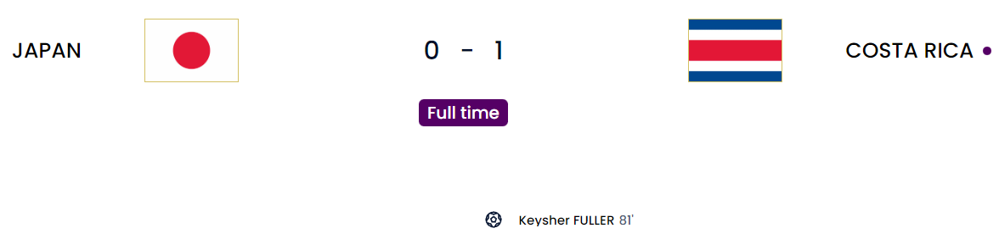
I don’t even wanna say much about this game. I have the highest disgust for the Japanese. They were all as inefficient as Timo Werner for Chelsea. It was a hard watch that I almost expected them to miss almost every time they attacked. Costa Rica held on so much and somehow managed to score with their first shot. If I am being brutally honest the goal wasn’t that great because he managed to dig it out of his feet but the keeper should be doing better because he did get a hand on it. With this win now, Germany still have a good shot now after their loss against this Japan side.
Japan
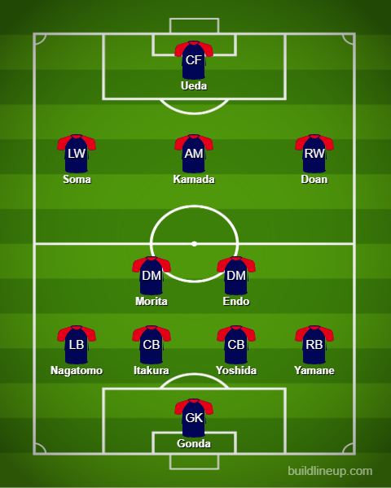
Costa Rica
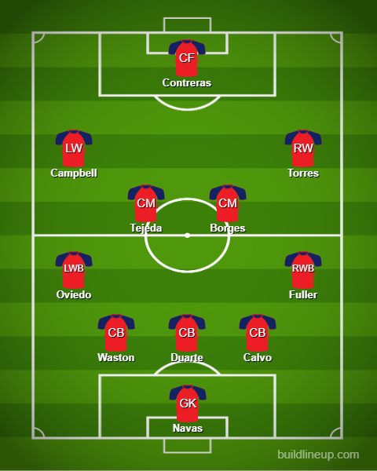
Belgium v Morocco
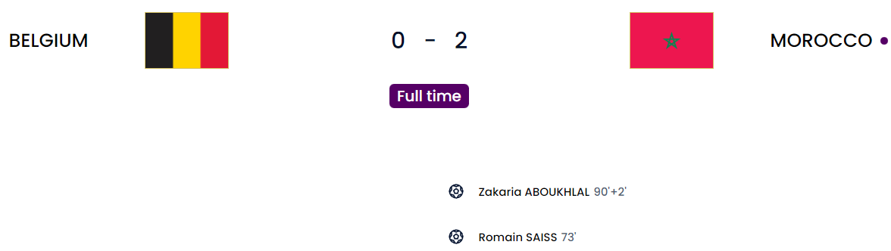
Stubborn Martinez. Belgium are “too old”. Deserving Morocco. This game was one where Belgium really were absolutely nowhere. Martinez was stubborn going with his snail defense yet again. You have Faes who has been alright for Leicester and Theate who is young and promising and yet he still trusts the snails. That came back to bite him in the end as Morocco were attacking from the get go. Hazard had his flaws with his lack of dribbling. He did not trust in the likes of De Ketelaere, Openda and Trossard(Although he did bring him on later). Morocco did get the lead right before half time when Ziyech’s freekick went in but it was disallowed because of offside but Saiss was adjudged to be interfering as well in a way which was annoying. We need a rewrite of the offside rule. Just bring the normal way back. If his foot is beyond the defender he is off otherwise he is on. This would have changed the dynamic completely and made Belgium attack. They did go ahead finally from Sabiri in the same fashion. Even though the official score says Saiss, I am giving it to Sabiri who hit a really good freekick and Saiss was onside and managed to disrupt Courtois again. The second was the nail in the coffin after Ziyech’s perfect cutback. De Bruyne is right. Belgium are “too old” to win the World Cup. They have a manager who trusts literal snails over youth so I can see why he would think that. He’s probably too used to Man City.
A side note. Bono who is the usual keeper for Morocco was originally named in the lineup. He went all the way to the photo but was replaced by Munir. Hope it isn’t serious. Munir was rather decent in this match overral but he isn’t Bono
Belgium
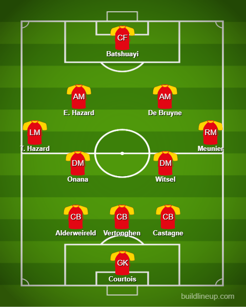
Morocco
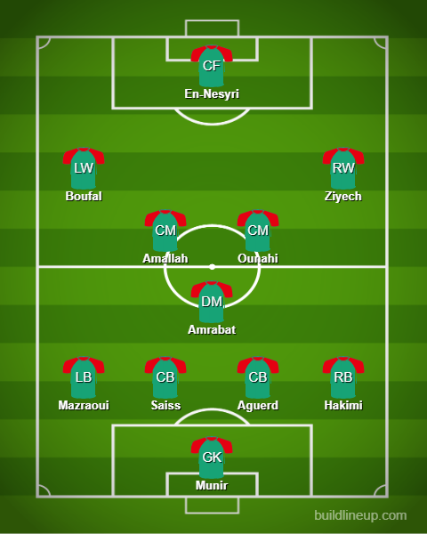
Croatia v Canada
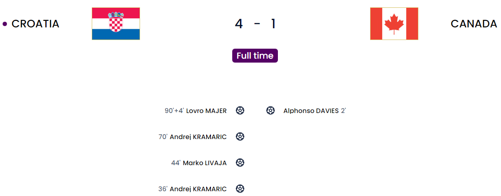
Canada have become the next team to bow out. After topping CONCACAF qualifying, they have managed to lose their second game and are now out. This was a drubbing and the score actually could have been way way more. We got the fastest goal of this tournament from Davies who was unmarked from a great cross. Later on Kramaric managed to score but it was offside. He managed to score again however from a great pass by Perisic. Next it was Livaja who managed to score outside the box after a great run from Juranovic. Overrall Canada just didn’t have much going forward and they were barely hanging on. Kramaric doubled his tally after half time and Majer just managed to add further salt into the wounds at the end. Davies gave everything for Canada. Here’s hoping they build on that and work hard for the 2026 one where they are one of the hosts.
Croatia
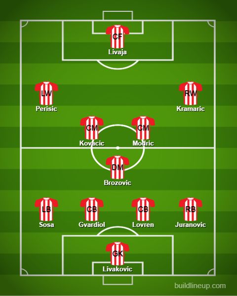
Canada
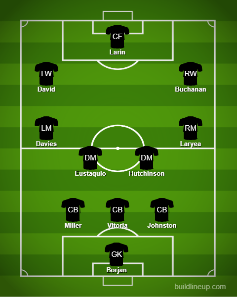
Spain v Germany
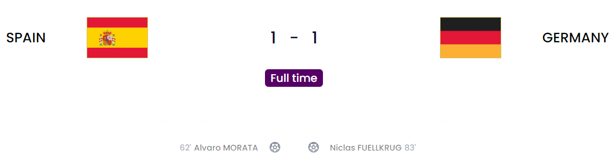
This was a throughly entertaining game. Yes it was a draw but Germany are still in it after the disgrace from Japan. First chance came after just 6 minutes with Olmo working Neuer who tipped it onto the post. Spain were fluid as always and creating really well. One chance from Germany came after a bad pass from Unai Simon but Gnabry could’nt hit the target. Flick made an interesting change playing Muller as a ST. Problem is, he ain’t a ST either. Like come on man why can’t u trust anyone other than Werner. He is injured get over it. At the 40 minute mark, Rudiger was completely unmarked and managed to head it in easily but after a VAR check it was ruled out for offside. The new semi automated offside tech working well so far in this tournament. One thing was evident from Germany: They pressed well from the front and created a few openings that way. At those times Spain felt a little shaky but Simon stood firm. Spain managed to take the lead via Alvaro Morata who managed to score from a brilliant low cross from Jordi Alba. Sule had to be doing better there sadly as he was the one caught out badly. Musiala had a good chance to bring Germany back but his shot was easily parried by Simon. Germany did come back thanks to an actual ST who was brought on. Fullkrug managed to beat Simon who really was lazy if I’m being honest. The assist was from Musiala who actually messed up a little but he was there luckily. This is what a goal poacher ST does. Hopefully Flick will start Fullkrug atleast in the last game.
Spain
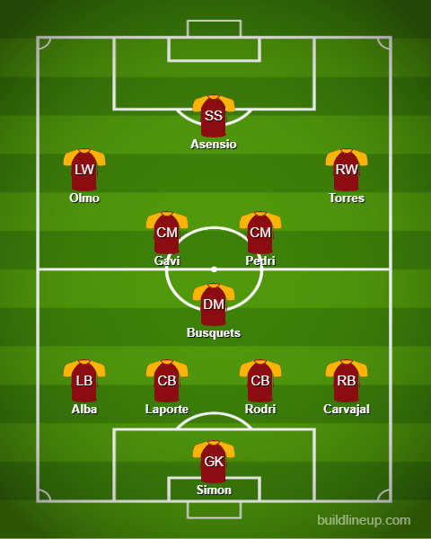
Germany
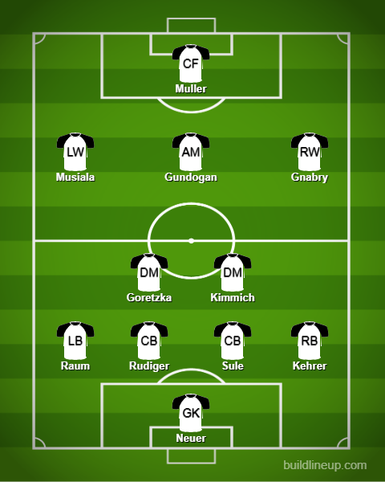